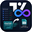
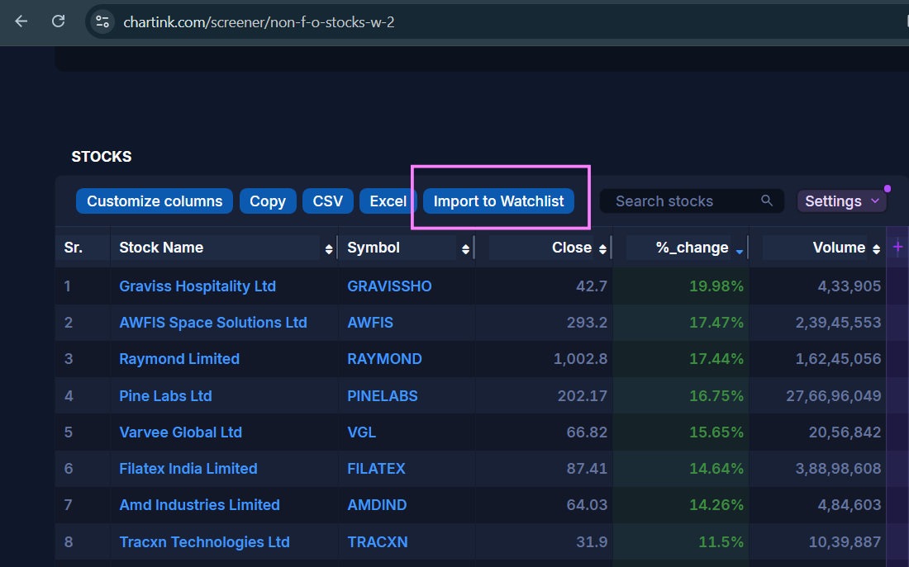
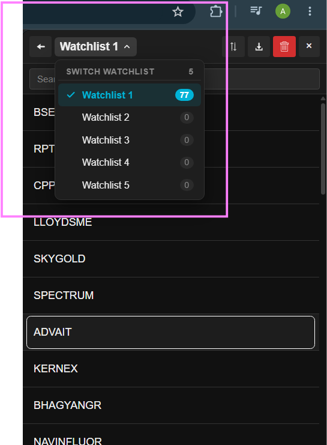
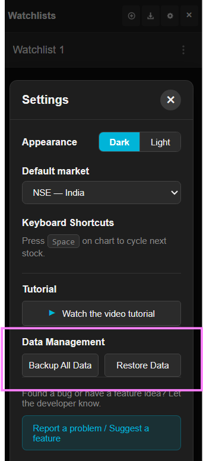

100% Free Forever • No TV Pro NeededUnlimited Watchlists
for TradingView.
Break TradingView's single watchlist cap. Keep all your watchlists docked directly beside your charts. Import complete Chartink screeners in 1 click, upload bulk CSVs, and cycle symbols with Spacebar.
No account required • No tracking • 100% Private • Zero monthly fees
- Unlimited Watchlists & Tabs
- 1-Click Chartink Screener Sync
- Live Re-Sync Button
- Bulk CSV & Excel Import
- 6 Color Tags & Notes
- 1,800+ Stocks per List

Everything a Watchlist Should Do
TradingView free plan caps you at one 30-item list. Our extension removes the limits so you can organize your trading strategy with precision.
Unlimited Custom Watchlists
Create separate lists for Swings, Breakouts, High Volume, Positional, and Scalping. Organize, rename, and manage without hitting paywalls.
1-Click Chartink Screener Import
Injected directly onto Chartink.com screener pages. Automatically captures multi-page scan results into a dedicated watchlist named after the scan.
Dedicated Screener Re-Sync
Imported Chartink lists retain their original screener link. Click the re-sync button inside the panel to refresh today's scan without opening Chartink again.
Bulk CSV, TXT & Excel Import
Instantly paste or upload ticker symbols from broker holdings (Zerodha, Groww, AngelOne, Interactive Brokers) or spreadsheet watchlists.
10,000+ Symbols & Rapid Search
Search across 10,000+ symbols. Smoothly loads and manages 1,800+ stocks in a single watchlist with zero browser slowdown.
6 Color Tags & Trade Notes
Right-click any ticker in your list to assign color flags (Green, Blue, Gold, Purple, Red, Cyan) and add custom catalysts like "Breakout > 450".
Keyboard Shortcuts & Rapid Switching
Use Space / ↓ or Shift+Space / ↑ to cycle stocks, → / ← to switch watchlists, Enter to open charts, and Alt+W to toggle the panel.
Floating Add Button on Charts
Studying any chart on TradingView? Click the floating + Add button on the chart toolbar to quickly save the symbol to any of your watchlists.
1-Click Backup, Restore & Export
Full data portability. Download a complete JSON backup of all your lists and notes, or export ticker symbols as CSV or plain text.
Import Chartink Screeners Directly Into TradingView
Indian traders run scans on Chartink and chart on TradingView. Stop wasting time copy-pasting symbols one by one:
- Run your scan on Chartink: Open any pre-built or custom screener on chartink.com.
- Click "Import to Watchlist": The extension injects a button directly above the results table, capturing all pagination pages automatically.
- Re-Sync with 1 click: Inside your TradingView side panel, click the circular ↺ Sync button anytime to pull the newest scan results.

Up and Running in 60 Seconds
Zero configuration. Works smoothly right out of the box with your existing TradingView setup.
Install & Pin Extension
Add to Chrome and pin the extension icon in your browser toolbar for instant 1-click access from any tab.
Open on TradingView
Click the dedicated Watchlist icon located directly on TradingView's right tool dock (topmost button).
Create or Import Lists
Create unlimited custom lists, sync Chartink screeners, or bulk paste CSV / Excel ticker files.
Fly Through Charts
Cycle stocks with Space / ↓ / ↑, switch lists with → / ←, and press Enter to open charts. Right-click tickers to color code or add setup notes.
Crafted for Serious Technical Traders
High-contrast, distraction-free, and designed to live right alongside your TradingView charts.




In-Depth Trading Guides
Master your workflow with our detailed step-by-step guides for TradingView and Chartink.
TradingView Watchlist Limit Guide
Understand the official free plan limits (1 list, 30 items) and how this extension bypasses them without paying $14.95–$59.95/month.
Read the guide →Chartink to TradingView Sync
Complete guide on how to automatically pull screener scans into TradingView watchlists and refresh them with a single click every morning.
Read the guide →CSV & Excel to TradingView
Turn broker portfolio exports (Zerodha, Groww, AngelOne, Interactive Brokers) or Excel sheets into clickable TradingView watchlists in seconds.
Read the guide →Frequently Asked Questions
Everything you need to know about the extension, features, and privacy.
Yes — 100% free forever. There are no paid upgrades, no locked features, no monthly subscriptions, and no advertisements. It is an independent open tool built for the trading community.
TradingView's free plan restricts you to a single 30-item watchlist. This extension maintains its own independent watchlists directly in your Chrome browser side panel and right toolbar. Because the lists live in your browser, you can create unlimited custom watchlists and cycle charts on TradingView without paying for TradingView Pro/Essential.
When you visit any screener page on chartink.com, the extension automatically injects an "Import to Watchlist" button above the results. Clicking it pulls all symbols (across all pagination pages) into a new watchlist named after the scan. The watchlist saves the scan URL, giving you a dedicated ↺ Re-Sync button to update the scan results daily with one click.
Free TradingView caps you at only 30 stocks. Our extension engine has been rigorously tested with 1,800+ stocks in a single list (such as the entire NSE active universe) with instant search filtering, zero lag, and instant chart switching via Spacebar.
All your watchlists, stock symbols, color tags, and notes are stored 100% locally in your browser using Chrome's secure storage.local API. No data is ever sent to any remote server. To move your watchlists between computers, simply click "Backup All Data" in Settings to download a .json file, and click "Restore Data" on your new computer.
None. Zero analytics, zero user tracking, zero logging. The only network requests made are directly to Chartink.com (when you choose to import or re-sync a scan) and TradingView.com (to load charts). Read our full Privacy Policy.
No. This is an independent open-source tool created by individual developer Alen Sarang Satheesh. It is not affiliated with, endorsed by, or sponsored by TradingView or Chartink. All trademarks belong to their respective owners.
Trade Without Watchlist Limits Today
Free, private, and seamlessly integrated into your TradingView charts.
Add to Chrome — 100% Free